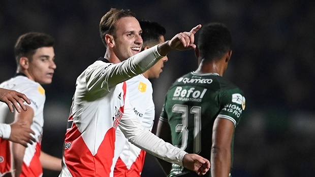
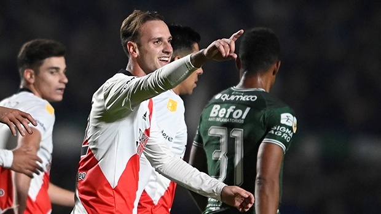

Franco Armani, figura en River, tras el empate con Fortaleza: "Lo importante es que no se perdió"
El arquero del Millonario analizó el 1-1 en Brasil y avisó: "Nos quedan dos partidos en casa para sellar la clasificación".
River igualó 1-1 con Fortaleza en Brasil, por la cuarta fecha del Grupo F de la Copa Libertadores 2022.
El conjunto dirigido por Pablo Vojvoda tuvo varias chances de gol, pero se topó con un gran Franco Armani.
Precisamente el arquero del Millonario habló tras empate y destacó la importancia de mantener el invicto.
 Julian Alvares juega los 8vos de la Libertadores.
Julian Alvares juega los 8vos de la Libertadores.